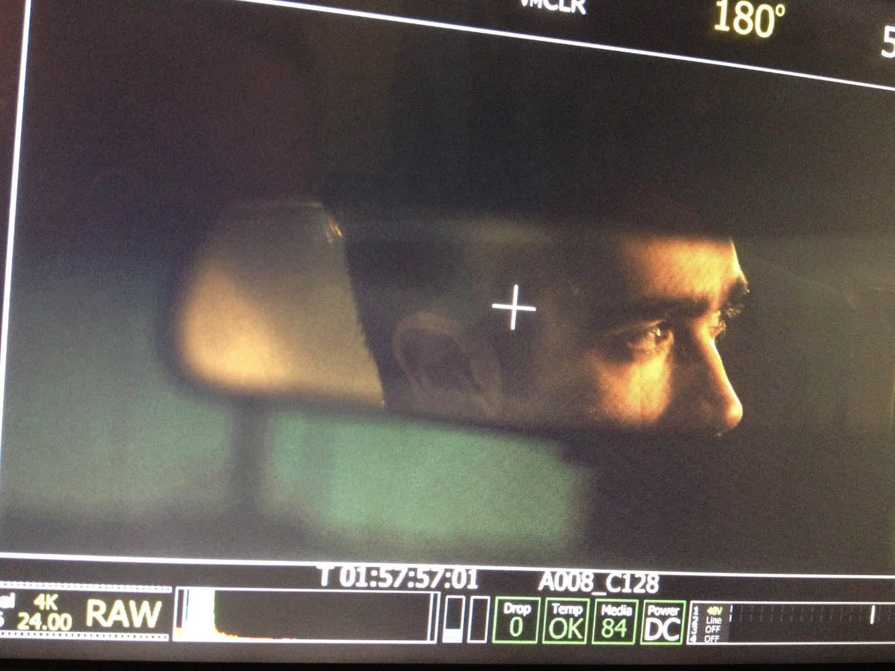
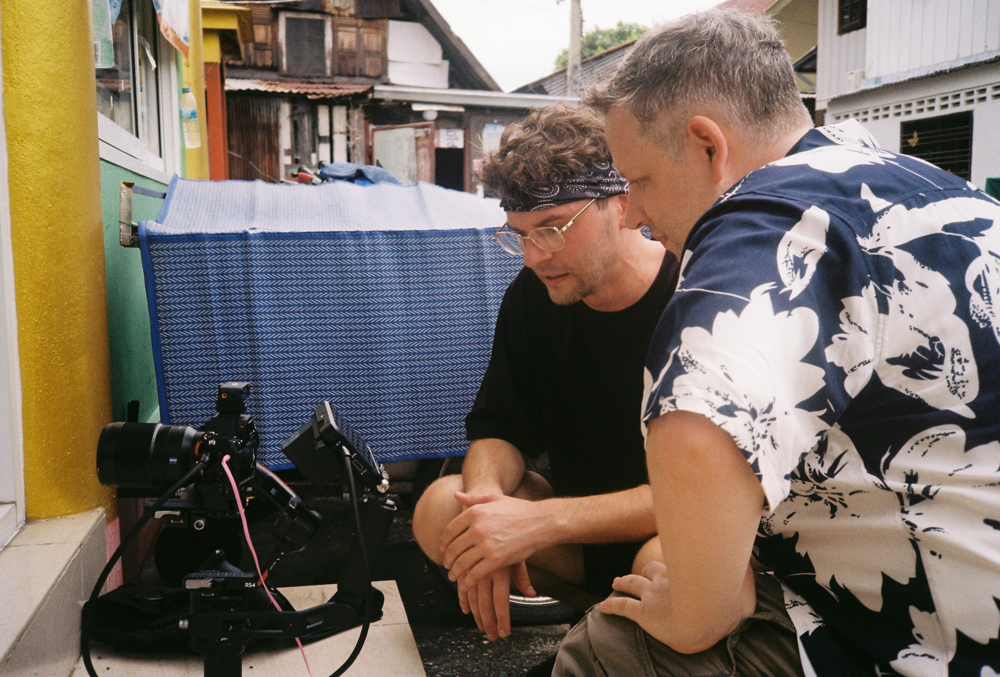
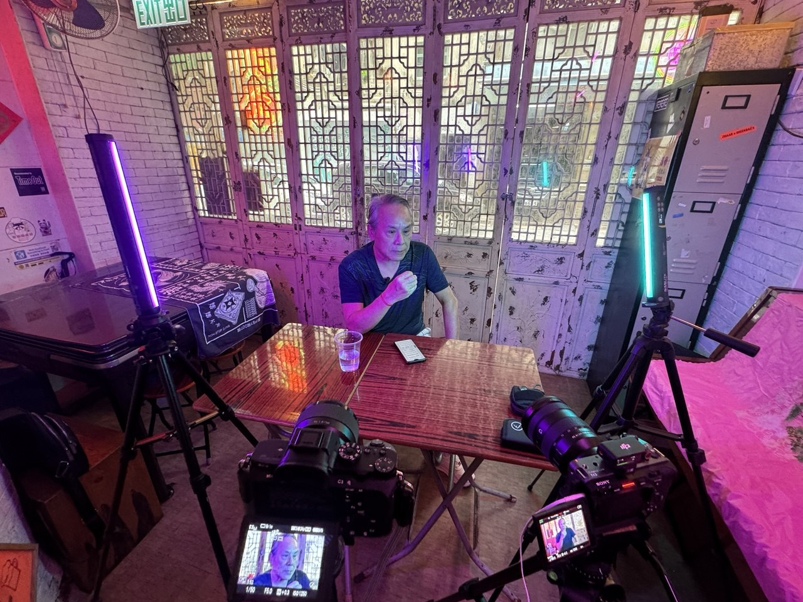

We are a one-stop documentary & film production shop, and a trusted source for all things related to Asian cinema and pop culture.

Established 2009 in Hong Kong CFK's purpose has always been to document and showcase Asian cinema, pop and underground culture via the highest quality documentaries and expanded media.
Companies who have used CFK include Eureka Entertainment, Error 4444, Vinegar Syndrome, Neon Eagle Video, Mondo Macabro and more.
Our production team covers the East Asian film industry, and is very much 'on-the-ground'.

Thanks to this regional presence CFK has direct and often exclusive access to original film sources, archival material, local research; and we often facilitate connections with rights-holders.
And – more importantly – the CFK team has personal access to the many amazing people who created these films; the personalities who make Asian cinema & culture so fascinating.
03 · Documentaries
Production
CFK documentaries typically focus on subjects ranging from genre cinema, to pop culture and the occult.

CFK are also well known as leading content producers in the field of blu-ray extras, finding and producing stories that deliver energy and interest.
04 · Connection
Right Here
Whatever project you have in mind – from documentaries, interviews, archival research to music videos and adverts – CFK is right here.